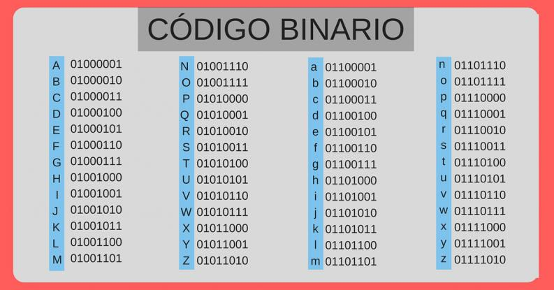

En un código binario de ancho fijo, cada letra, dígito, u otros símbolos, están representados por una cadena de bits de la misma longitud, como un número binario que, por lo general, aparece en las tablas en notación octal, decimal o hexadecimal. Es frecuente también ver la palabra bit referida bien a la ausencia de señal, expresada con el dígito "0", o bien referida a la existencia de la misma, expresada con el dígito "1". El byte es un grupo de 8 bits, es decir en él tenemos 256 posibles estados binarios.

La distancia es una característica sólo aplicable a las combinaciones binarias. La distancia entre dos combinaciones es el número de bits que cambian de una a otra. Por ejemplo: si se tienen las combinaciones de cuatro bits 0010 y 0111 correspondientes al 2 y al 7 en binario natural, se dirá que la distancia entre ellas es igual a dos ya que de una a otra cambian dos bits. Además, con el concepto de distancia se puede definir la distancia mínima de un código. Esta no es más que la distancia menor que haya entre dos de las combinaciones de ese código. La distancia es una característica que, además, sólo se aplica a las combinaciones binarias. En resumen, la distancia entre dos combinaciones es el número de bits que cambian de una a otra.